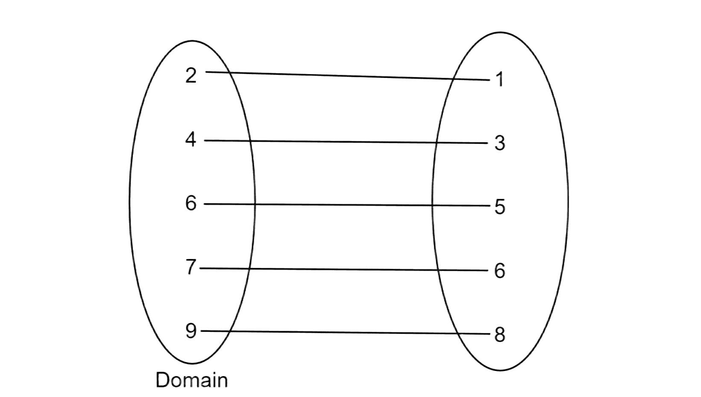
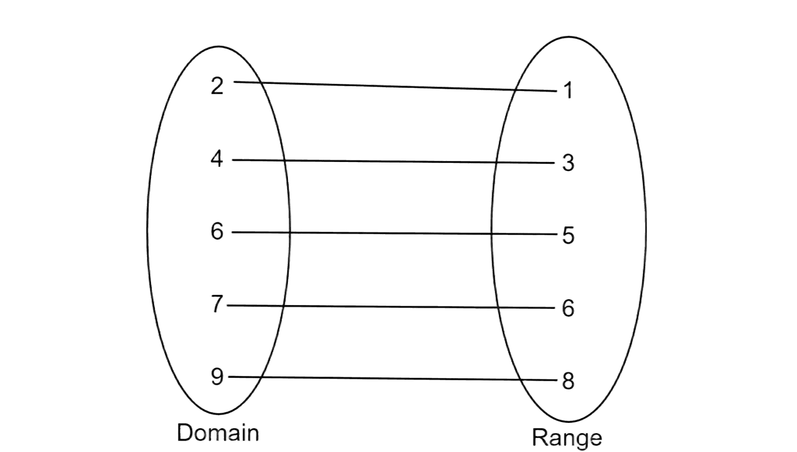

Domain and Range are both a set of numbers in a function. They are sets of numbers that are used to find the possible numbers that could be used.
To understand what a Domain and Range is, we need to understand what a function is. A function is a relationship between two variables, most commonly x and y. Functions are used to input and output values…
| X | Y |
|---|---|
| 0 | 2 |
| 1 | 3 |
| 2 | 4 |
| 3 | 5 |
| 4 | 6 |
In this function, y is x plus 2 so we write this as f(x) = x + 2…
f(x) is the most common way to define a function, the letter could also change as well to include multiple functions…
In other words, a function is a pattern between two variables.
Domains are used to show what numbers could work in a function. Remember, sometimes a number cannot work in a function like a square root function…
The square root of any negative number is an imaginary number which is complex. Meaning that the domain cannot be negative. There are many domain notations. Set Notation is when numbers not equal to a specific number are compatible with the function…
This tells us that any x value such as those that are greater than zero are compatible…
Interval Notation is when a group of numbers is the domain and are enclosed in parentheses or square brackets…
Domains are illustrated as the left side of all the numbers when a function is shown as two ovals…

Sometimes a group of numbers like real numbers are only compatible for a specific function like 1 over x…
This is a common example of how a domain can be useful. X cannot be zero because that would result in an undefined number. So any real number that is not zero is compatible with this function…
The two weird symbols that are &isin and ℝ. The weird “e” symbol is a notation that x is an element of ℝ which is all real numbers. So this notation is basically telling us that x is all real numbers with the only exception with zero with x not being equal to zero at the end of the domain.
The range is the set of outputs from the domain. The range of a function is the domain changed by the function…
A function’s range is basically every output from the domain…
